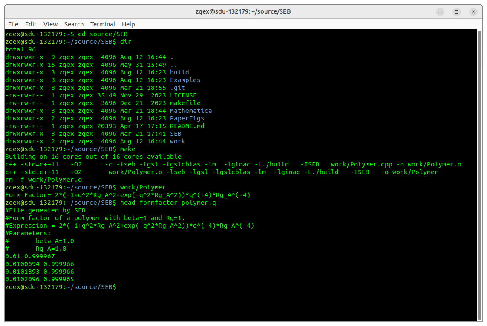
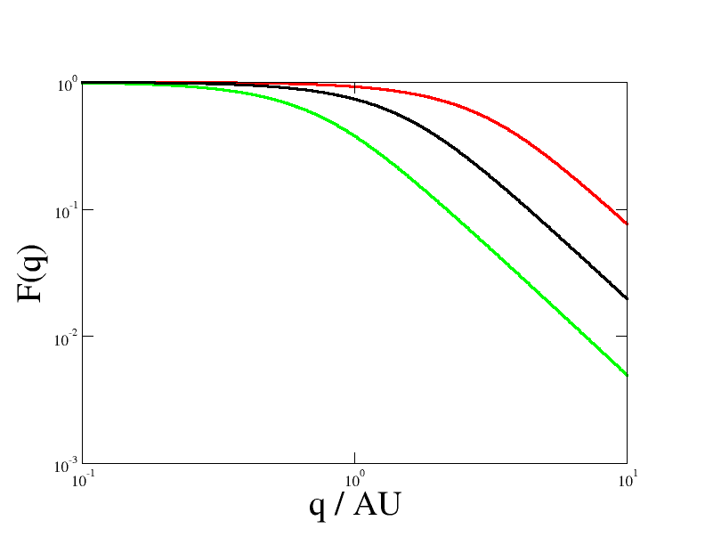

Home
Tutorial: Solutions of polymers with SEB
Contributors: Lau Blom Grøndahl & Carsten Svaneborg (FKF SDU).

Illustration of a Gaussian chain model of a single flexible polymer molecule.
Before you start
- Download and install Scattering Equation Builder (SEB)
- Complete the Spheres tutorial to understand interference between scatterers.
Learning outcomes
In this tutorial you will learn about flexible polymers, and their form factor, in particular- the conformational statistics of polymers,
- the Gaussian model for flexible polymers,
- how to derive the Debye form factor,
- and how to use SEB to plot the form factor of flexible polymer.
Polymers
Polymers are made by chemically linking many identical monomers together to form long linear chains. Typical polymers are polyethylene (e.g. plastic bags), polycarbonate (e.g. automotive), polyisoprene (e.g. rubbers), polystyrene (e.g. plastic cutlery), and polydimethylsiloxane (e.g. lubricants). There are also many biopolymers, such as DNA, collagen, fibrin, polypeptides, polynucleotides, and polysaccharides which plays various roles in our cells and body.
Model of a single polymer
Here we will focus on a single synthetic polymer for instance polyethylene. The chemical bonds beween subsequent carbon atoms are 1.54Å long. The angle between subsequent carbon bonds is 109.5 degrees. These are set by fixed by chemistry. From a polymer physics pespective, what is interesting is the torsional angles defined by three subsequent bonds. The torsion angles can roughly be in three different states (trans, gauge+, gauge-) where the energy difference of gauge+/gauge- and trans is comparable to room temperature. At absolute zero all torsion angles will be trans, and the polymer will have a rod-like zig-zag conformation and have zero conformational entropy.
If we imagine increasing the temperature, then the polymer can increase its entropy by introducing additional gauge+/gauge- torsional states. This corresponds to introducing a number of kinks along the polymer. The physics is analogous to the formation of vacancy-interstitial pairs in a crystal at finite temperature. Hence a single polymer is a very flexible and can adopt a vast number of conformations depending on the random sequence of trans/gauge+/gauge- torsion angles along the polymer.
If we zoom out a bit from the detailed chemical structure, then the simplest polymer model, used in polymer physics, is that of a random-walk. The random walk consists of $N$ steps, where each step has a constant length $b$ (aka the Kuhn length). All steps are in a random direction, and they are assumed to be statistically independent from each other. Then the total contour length of the random walk is $L=Nb$, and its easy to show that the average spatial distance from one end to the other of the polymer is given by $\langle R^2\rangle = Nb^2$.
Then we can ask what is the probably distribution of the spatial distance between the ends or any internal monomers along the polymer? Let $n$ denotes the number of steps between the monomers (or the ends in which case $n=N$). With a bit of mathematics, we obtain a Gaussian distribution:
$$ P(r;n) = \left(\frac{3}{2\pi b^2 n}\right)^{3/2} \exp\left(- \frac{3 r^2}{2 b^2 n} \right).$$
Mathematical note: here we have implicitly taken the limit $N\rightarrow\infty$,$b\rightarrow0$ keeping $\langle R^2\rangle$ constant. Thus here we regard $n$ as a real number $\in[0,N]$, and not just an integer. This is known as the Gaussian polymer model.
Physically this corresponds to replacing each straight step with a more fine-detailed random walk. Thus turning the random walk model into a fractal. This approximation is ok, since polymer physics is dominated by the large scale conformational properties. The short-scale chemical details rarely matters. However, for describing real polymers its clear that a Gaussian polymer models on length scales below $b$. Later we will see how the polymer scattering is affected by this.
From real polymers to Gaussian polymer models
Different chemical polymer species corresponds to different values of the Kuhn length $b$. Different molecular weights of polymers corresponds to different number of random walk steps. See e.g. R. Everaers et al. for the Kuhn length of other commodity polymers "Kremer−Grest Models for Commodity Polymer Melts: Linking Theory, Experiment, and Simulation at the Kuhn Scale" Macromolecules 53, 1917 (2020) or the polymer handbook.
Some examples:
- The monomer of polyethylene (PE) is $H_2C$=$CH_2$ thus it has 2 carbon atoms. When the monomers are linked together, the double bonds are broken, and the chain is a sequence of carbon atoms with single bonds between them. PE is relatively stiff and has a Kuhn length of $b=15.40Å$. One random walk step contains $6$ monomers or $12$ $CH_2$ groups.
- A much more flexible polymer is cis-polyisoprene (cis-PI) with $b=9.45Å$ and one step corresponds to just $1.89$ monomers.
- We can also apply random walk models to DNA in which case $b=90nm$ and one step corresponds to $265$ base-pairs (depending on salt concentration).
- Actin is a very stiff biopolymer with $b=35.6\mu m$. However, they never become so long as to show random walk polymer statistics.
Exercise 1
A polymer molecule has a length $L$ and a characteristic spatial size $R=\sqrt{\langle R^2\rangle}$. Calculate
- Calculate $R$ and $L$ for a polyethylene molecule with $1.000$ monomers.
- Calculate $R$ and $L$ for a polyisoprene molecule with $1.000$ monomers.
- Calculate $R$ and $L$ for a DNA molecule with $10^7$ base-pairs (approximately one chromosome).
Derivation of form factor of a single polymer
We think of a single polymer in a solution, where each monomer as a point scatterer, then the form factor can be stated as
$$F(q) = \left<\frac{\sin(q r)}{qr} \right>, $$
which is known as the Debye Formula. Since the polymer is free to rotate any way, the form factor only depends on the magnitute of the momentum transfer $q$, and the scattering pattern will be axis symmetric around the direct beam.
The difficulty here is that polymers are flexible, so we have to average the scattering over the conformations they can adopt. In particular, we have to perform the average over 1) all pairs of monomers along the polymer, 2) the distribution of spatial distances between a given pair of monomers.

Sketch of polymer showing the meaning of the symbols.
To average over pairs of monomers, we first imagine that each monomer is randomly chosen from an uniform distribution in the interval $[0,N]$. Thus $P(n_1)=1/N$ for $n_1\in [0,N]$ and zero elsewhere. Hence the average over the first monomer position $n_1$ corresponds to performing the integral $\int_0^N dn_1 N^{-1} \cdots$ and similar for the second monomer position $n_2$. Then for two given monomers $n_1,n_2$, the number of steps between them is $n=|n_1-n_2|$, and thus $P(r;n)$ above gives the probability of the distance between the monomers being $r$. Using spherical coordinates we can integrate over the distribution of spatial distances: $\int_0^\infty dr 4\pi r^2 P(r;|n_1-n_2|) \cdots $. Thus we can express the three averages as:
$$ F(q) = \int_0^N \frac{dn_1}{N} \int_0^N \frac{dn_2}{N} \int_0^\infty dr 4\pi r^2 \left(\frac{3}{2\pi b^2 |n_1-n_2|}\right)^{3/2} \exp\left(- \frac{3 r^2}{2 b^2 |n_1-n_2|} \right) \frac{\sin(q r)}{qr},$$
after quite a bit of paper-and-pencil work (left as an exercise), the result is becomes the nice short expression $$ F(q) = \frac{2(\exp(-x)-1+x)}{x^2}, $$ with $x=q^2 R_g^2$ and $R_g^2=\langle R^2\rangle/6=b^2 N/6$ is the radius of gyration of the polymer molecule. This describes the typical spatial extend of the molecule. Note that because all the three distributions that went into the integrals were normalized, then the form factor is also normalized such that $F(0)=1$. This result was first derived by P. Debye (P. Debye, J. Phys. Coll. Chem 51, 18–32 (1947)).
Scattering Equation Builder (SEB)
Scattering Equation Builder (SEB) is a C++ library for analytical derivation of form factors of complex structures. The structures are build out of basic building blocks called sub-units. Polymers and rods are two of the sub-units supported by SEB.
Before you can use SEB you need to install a working C++ compiler, the GiNaC, GSL and CLN libraries, and the SEB source code itself. See GitHub for the details of how to install SEB on various operating system. Importantly, you need to remember the folder, where you put the SEB source code. It has a subfolder "work" where you can save and compile your own programs.
Gaussian polymer with SEB
To calculate the form factor of a Gaussian polymer, cut'n'paste the following C++ program into an text editor (e.g. notepad). Save it as "Polymer.cpp" in the work folder under the SEB installation.
// Include SEB functionality #include "SEB.hpp" int main() { // Create world of sub-units World w("World"); // Add a single polymer-subunit named "A" GraphID p = w.Add(new GaussianPolymer(), "A"); // Wrap unit in a structure named Structure (this will make sense later) w.Add(p, "Structure"); // Print out equation for the form factor ex F=w.FormFactor("Structure"); cout << "Form Factor= " << F << "\n"; // To evaluate the equation, we need to define value of paramters ParameterList params; w.setParameter(params,"Rg_A",1); // Radius of gyration for "A" polymer w.setParameter(params,"beta_A",1); // Scattering length // Choose q values DoubleVector qvec=w.logspace(0.01, 10.0, 1000 ); // Use Evaluate to save form factor data to a file w.Evaluate( F, params, qvec, "formfactor_polymer.q", "Form factor of a polymer with beta=1 and Rg=1."); }In a terminal, navigate to the folder where you installed SEB (source/SEB in my case below). In that folder run "make". The first time you run make, it will compile the whole SEB library and your own source file. Next time it will only compile the source files you have changed. In my example below, it only compiles "work/Polymer.cpp". The resulting executable is "work/Polymer" (work/Polymer.exe on Windows). Run the executable by typing "work/Polymer". In the example below you see it prints out the equation for the Debye form factor. After it has run, it has created a file "formfactor_polymer.q" in the current folder. The file starts with some comments, and then has two columns of numbers: q and F(q). Try plotting the file.
Commandline prompt on Linux showing how to compile and run the program, also shown is some of the content of the file "formfactor_polymer.q".
Log-log plot of the form factor of a Gaussian polymer model with $Rg=1$ (black), $2$ (green), $0.5$ (red).Your plot should look similar to the plot above. Since the form factor only depends on $x=q^2 R_g^2$, changing $R_g$ corresponds to a horizontal shift of the curve. Remember that log-log representation is good for reading off power laws. For $qR_g \ll 1$ corresponding to large scales the form factor is essentially flat thus $F(q) ~ q^0$, whereas for scales smaller than the polymer size $qR_g \gg 1$ the form factor follows a power law $F(q)\sim q^{-2}$. These exponents are in fact directly related to the fractal dimension of the polymer. Seen at large scales any finite sized object is a point with $0$ fractal dimension, whereas a random-walk has fractal dimension $2$. This is due to the $\langle R^2 \rangle \sim N$ relation.
A note on units in SEB
SEB does not have any specific choice of unit built in. The reason is that scattering expressions (essentially being counts on a detector) only depend on dimensionless combinations such as $qR_g$. Thus, if choose $m$, $\mu m$, $nm$, or $Å$ for the length scales, such as when you enter $R_g=1$, then you have chosen $m^{-1}$, $\mu m^{-1}$, $nm^{-1}$, or $Å^{-1}$ as the unit for the $q$.Exercise 2
Use SEB to calculate the form factors of the polymers in exercise 1. Before making the plot, make a sketch on paper of what you expect the plot to look like.
Home